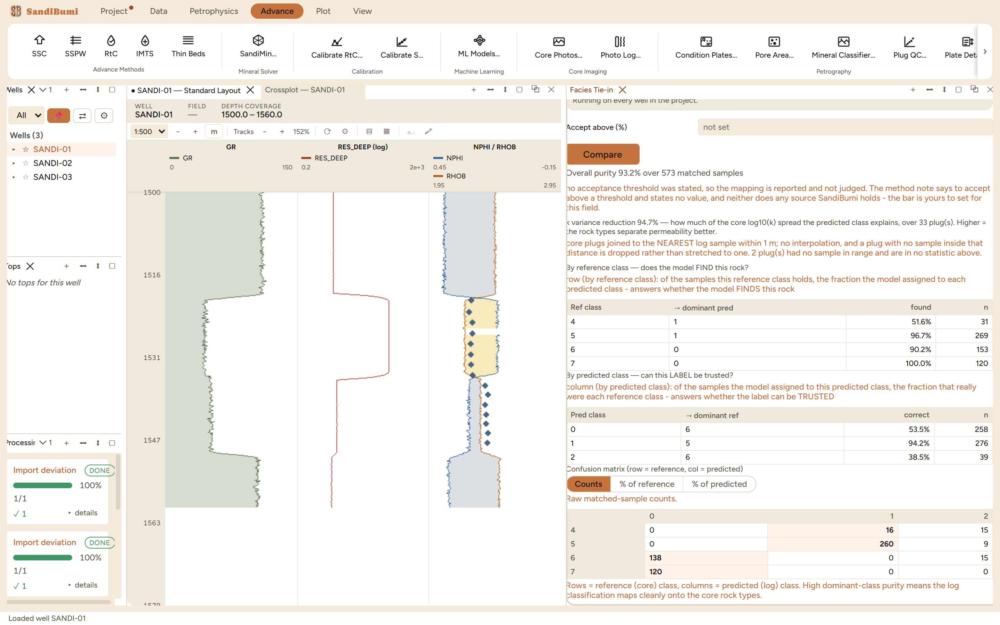

Facies Tie-in cross-tabulates a predicted rock-type curve against a
reference one: an electrofacies or ML classification against core-derived
rock types, as a confusion matrix with purity statistics. Reach for it
after any facies run, because a facies log is only as good as its
agreement with what the rock was actually called, and this pane is where
that claim gets a number.
The pane

A GMM electrofacies against the rock-type curve: overall
purity 93.2% over 573 matched samples, k variance reduction 94.7% over
33 plugs, and the two per-class tables that ask different
questions.
Predicted and reference are both curves (any discrete curve
qualifies); an acceptance threshold field exists and, unset, the pane
refuses to judge:
no acceptance threshold was stated, so the mapping is reported and not judged.
The method note says to accept above a threshold and states no value, and
neither does any source SandiBumi holds - the bar is yours to set for this field.
Core joins by nearest sample within 1 m, never by
interpolation; the example drops 2 plugs with no sample in range
and says so, because a plug stretched onto a distant sample would
manufacture agreement.
Step by step
Open the pane (workspace ＋ menu ▸ Facies Tie-in), pick
the predicted and reference curves, and press Compare.
Read the two per-class tables separately. By reference class: of the
samples this rock really is, what fraction did the model find? By
predicted class: of the samples the model labelled this, what
fraction really are? Recall and precision, in plain words.
Switch the matrix between counts, % of reference and % of predicted
to see where the confusion actually flows.
Reading the result
The overall purity (93.2%) is the headline, but the per-class tables
carry the decision. In the example one reference class is found only 51.6%
of the time and one predicted label is right only 38.5% of the time, both
low-n classes; the model is excellent on the dominant rocks and unreliable
on the rare ones, which a single average hides. The k variance reduction
(94.7% of the core log-permeability spread explained by predicted class,
over 33 plugs) is the economically meaningful check: a facies scheme that
separates permeability is useful even where its labels wobble, and one
that does not is nomenclature.
QC and pitfalls
Set the acceptance bar before running, not after. The pane
deliberately ships no threshold; deciding it after seeing the score is
how every scheme passes.
Read the low-n classes as unproven, not wrong. A class with a
handful of matched samples cannot demonstrate either purity or its
absence.
Purity is not transferability. The tie-in is computed on
wells that have both curves; whether the scheme travels to uncored
wells is the ML pane's blind-test question, not this one's.